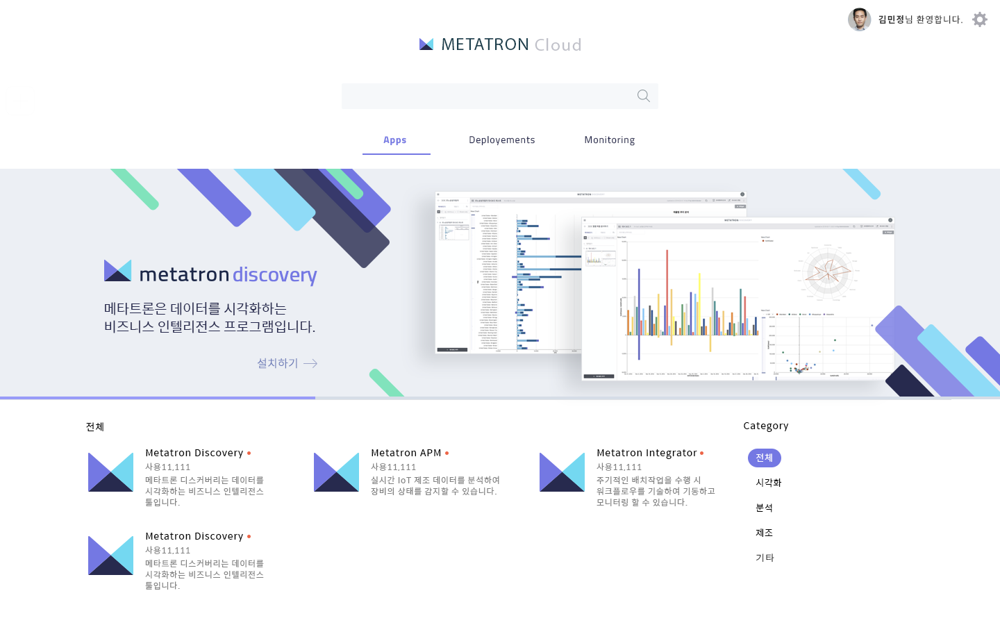

Cloud¶
Advanced APM은 Cloud 환경을 지원합니다.
Cloud Portal에서 APM을 인스톨 가능합니다.

Advanced APM은 Docker Image와 Kubenetes 플랫폼 위에 어러 어플리케이션을 클러스터에 설치하고 운영할 수 있습니다. 쉬운 설치 방법 및 가이드와 다양한 모니터링 뷰를 제공합니다.
이렇게 설치된 클러스터는 사용자에게 다양한 분석환경 서비스를 제공합니다.
Advanced APM은 Cloud 환경을 지원합니다.
Cloud Portal에서 APM을 인스톨 가능합니다.
Advanced APM은 Docker Image와 Kubenetes 플랫폼 위에 어러 어플리케이션을 클러스터에 설치하고 운영할 수 있습니다. 쉬운 설치 방법 및 가이드와 다양한 모니터링 뷰를 제공합니다.
이렇게 설치된 클러스터는 사용자에게 다양한 분석환경 서비스를 제공합니다.